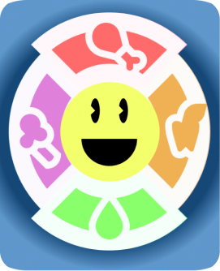
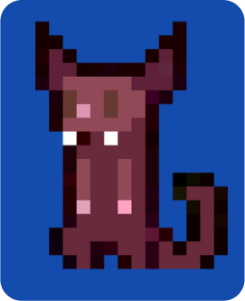

My thesis project
Nutri-Eat
An app designed for my thesis work. Its aim is to help people to spend effectively their time in the kitchen and teach what to cook in order to have a healthy nourishment.
View More
An Image Campus Game Design project

Time Raiders
2D platformer action-adventure game developed with Godot where the player impersonates Scott Riley whose main mission is to keep the timeline safe from the Oops.
View More
A Gamification project

Mythology Quest
Gamification game developed with Twine where you get to live the story of the famous greek hero called Perseus and take decisions to build your own path. Discover his story.
View More
A Game Jam project
Kaleido World
A game developed in the Global Game Jam from january 2022 (topic: duality). It is a world where you will control the fate of two opposing races by controlling the sun and the moon.
View More
An iteration project

Ecos del Tigre
The main focus of this proyect, developed in 2019, is to connect through sounds and visuals the experience in the Art Museum of Tigre with its origins through nowadays technologies.
View More